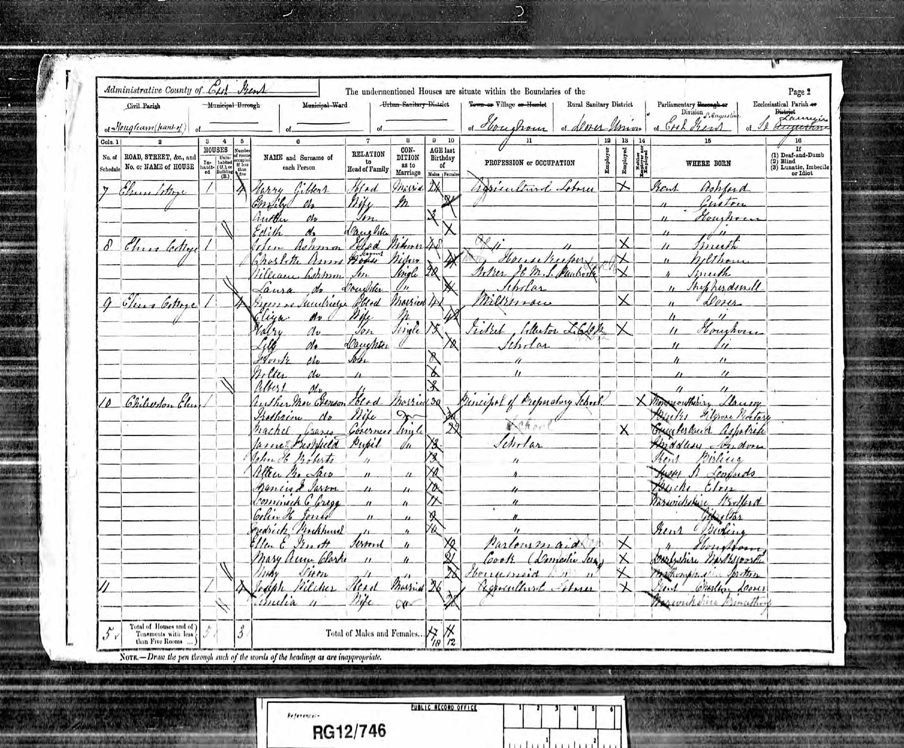
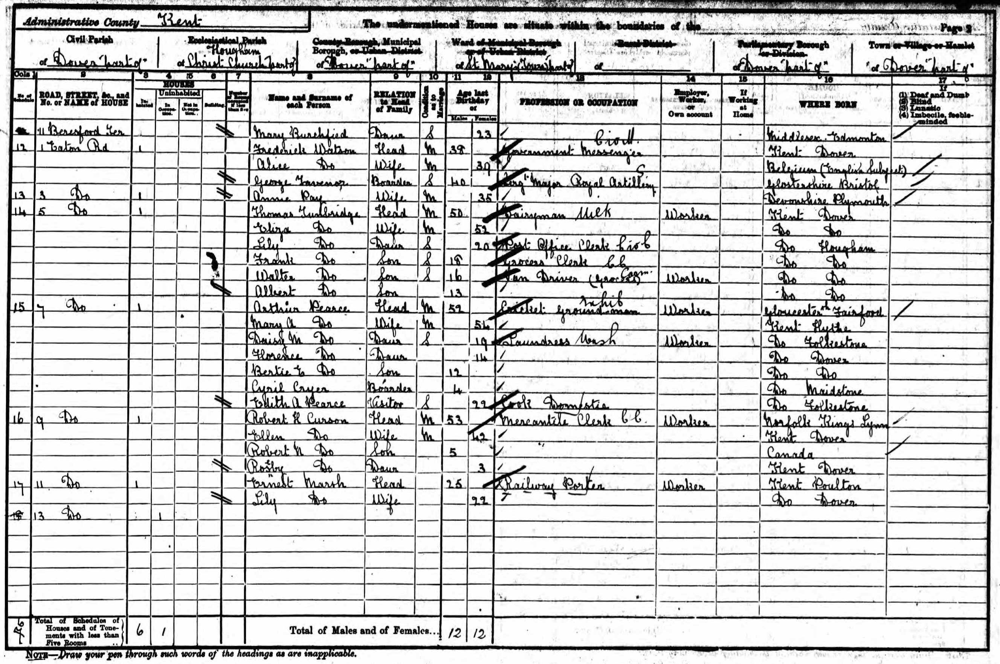
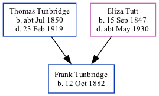

Frank Tunbridge 1882 -
[ Home ] | [ Calendar ] | [ Surnames Index ] | [ Family History ]A grocer's clerk and the 3rd of 5 children of Thomas Tunbridge (a dairyman) and Eliza Tutt (a general servant), Frank Tunbridge, the first cousin twice-removed on the father's side of Nigel Horne, was born in Hougham, Kent, England on Oct 12, 18821,2,3,4 and baptized there at Christ Church on May 25, 1898, the same day as his brothers Walter and Albert.
Throughout his life, he lived at his birthplace on Apr 5, 18915; and on 5 Eaton Road, Dover, Kent, England on Mar 31, 19016.
Parents
- Thomas was born c. Jul 1850
- Eliza was born on Sep 15, 1847
Citations
- 1891 England Census Online publication - Provo, UT, USA: The Generations Network, Inc., 2005.Original data - Census Returns of England and Wales, 1891. Kew, Surrey, England: The National Archives of the UK (TNA): Public Record Office (PRO), 1891. Data imaged from The National
- 1901 England Census Online publication - Provo, UT, USA: The Generations Network, Inc., 2005.Original data - Census Returns of England and Wales, 1901. Kew, Surrey, England: The National Archives of the UK (TNA): Public Record Office (PRO), 1901. Data imaged from the National
- England & Wales births 1837-2006 - Findmypast
- England & Wales, FreeBMD Birth Index, 1837-1915 Online publication - Provo, UT, USA: The Generations Network, Inc., 2006.Original data - General Register Office. England and Wales Civil Registration Indexes. London, England: General Register Office. © Crown copyright. Published by permission of the Cont
- 1891 England, Wales & Scotland Census - Findmypast (was age 8 and the son of the head of the household)
- 1901 England, Wales & Scotland Census - Findmypast (was age 18 and the son of the head of the household)
Media
1891 UK Census

1901 UK Census

1891 England, Wales & Scotland Census - GBC/1891/0005982761
England & Wales births 1837-2006 - BMD/B/1882/4/AZ/000564/039
Kent, Canterbury Archdeaconry baptisms 1538-1912 - GBPRS/CANT/B/96323293
Family Tree
Generated by Ged2Site. Last updated on Jul 20, 2025